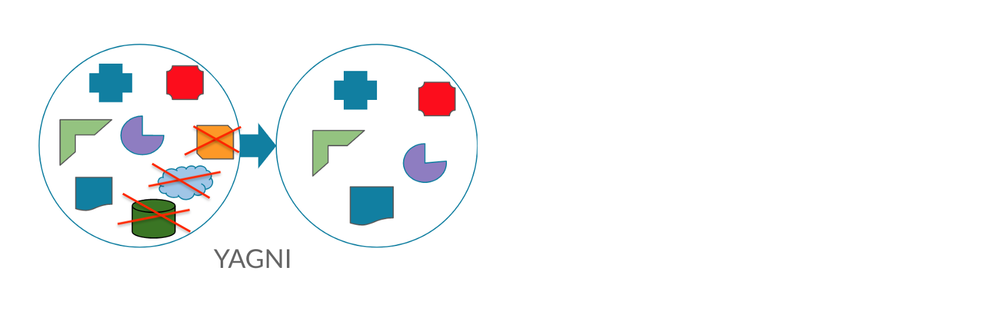
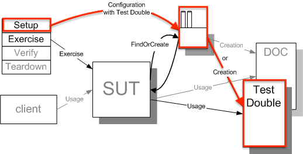
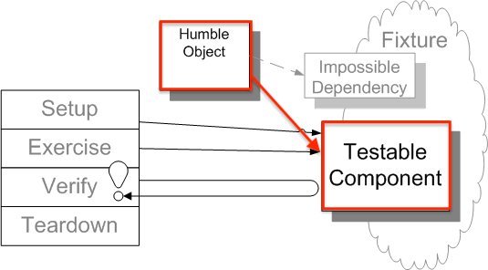
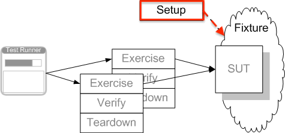
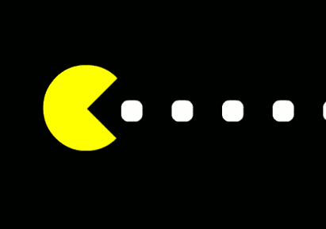

Design patterns and concepts
In Test automation
Topics in the series
1. Design patterns and concepts in test automation
2. Advanced design patterns in web test automation
3. Advanced design patterns - Desktop, API, Data warehouse
Test automation patterns
Process Patterns How set up or improve the test automation process.
Management Patterns How to manage test automation in the development process.
Design Patterns How to design efficient and easy to maintaine automation testware.
Execution Patterns How to take care that test execution is easy and reliable.
Table of contents
-
Test harness architecture
-
Design patterns and concepts in test automation
-
xUnit patterns
-
CICD pipelines
Test harness architecture
Automated test framework
Test harness is a collection of software and test data configured to test a program unit by running it under varying conditions and monitoring its behavior and outputs. It has three main parts:
the test execution engine (a.k.a Core features),
test scripts (our Business domain model)
and the test data
Test code is Production code
Same concepts, principles and care should be applied.
SDLC phases too!
Meaning, we should unit test our Engine design and logic.
Workflow and good practices, like Git branching.
Maintenance and low complexity are most cfitical.
Architecture of the framework
It's the highest level of abstraction of a system. What kind of data is used (static, generators, files), how do modules interact with each other, reporting and logging.
Then move to chooce the frameworks, languages, scope, goals, 3th party dependencies and integrations
Types of Automation Frameworks
Record & Playback, has its place under the sun. With disposable tests, simple setup and no coding skills required - fits perfectly in short lived projects or non technical team.
The recorded tests should not be fixed! Rather, used only until fit, to free time and support you.
Types of Automation Frameworks (2)
Modular and Data-Driven frameworks rely on different modules or exported scripts that are later combined into more complex tests.
Data layer is added on top of other types, so to segregate the test script logic and the test data from each other. Also, to power up the input combinations.
Types of Automation Frameworks (3)
A Library framework, upgrade the Module-Based Testing one, by segregating the application into common functions. It can determine the common steps, group them into functions under a library, and call those functions in the test scripts whenever required.
Keyword-Driven frameworks lay out each function of the application under test in a table with a series of instructions in consecutive order for each test that needs to be run. The test data and script logic are again separated.
Types of Automation Frameworks (4)
A Behavior-Driven Development frameworks, lay out easily readable and understandable format for the stakeholders. The BDD markups are integrated well with the programming IDEs.
Hybrid testing frameworks is a combination of more than one of the before mentioned ones. The best thing about such a setup is that it leverages the benefits of all kinds of associated frameworks.
Types of Automation Frameworks (5)
AI-powered frameworks are mostly bare promises for systems that can write automated tests automatically, codeless tests, or effortless/almost zero test maintenance.
Future of testing is yet to be achieved!
Design patterns and concepts in test automation
Design principles
A principle is a type of concept. A concept is an idea about something. A principle is ordinarily meant to represent a special relationship or rule that is required or expected to be in effect.
Design principles provide high level guidelines to design better software applications. They do not provide implementation guidelines and are not bound to any programming language.
SOLID Principles
Single Responsibility, states that class should have one, and only one, reason to change.
Open-closed Principle: Software entities should be extendable without actually changing their contents.
Liskov Substitution simply means, that a subclass class should be substitutable for their parent.
Interface Segregation, implies that one should break down the interfaces in many smaller ones, so they better satisfy the exact needs of our clients.
Dependency Inversion can be boiled down to Depend on Abstractions not on implementation details.
Other Principles
Don't repeat yourself aims to reduce repetition of code, replacing it with abstractions or using data normalization to avoid redundancy.
You Ain't Gonna Need It, advises not to add functionality until deemed necessary.
Keep It Simple, Stupid states that most systems work best if they are kept simple rather than made complicated.
Putting it all together
Putting it all together
Putting it all together

Putting it all together

Putting it all together

Putting it all together
Putting it all together

xUnit patterns

xUnit Family
xUnit tools, and more importantly the philosophy, offer up a huge opportunity to programming teams.
An opportunity to write powerful regression test suites that enable teams to make drastic changes to a code-base with far less risk.
Opportunities to re-think the design process with Test Driven Development.
xUnit Patterns
There are more than 60, reusable solutions to a commonly occurring problems within a given testing context.
Making tests first class citizens.
Will improve your framework structure, allowing clean and small, yet powerful extensions.
Golden hammer
"If all you have is a hammer, everything looks like a nail."
Programmers usually go through,
having no idea about Design patterns ...
to force everything into patterns ...
to ... don't blindly follow patterns, but allow them to emerge from the solution.
Design for testing
Set of techniques that add testability features to a (hardware) product design. The added features make it easier to develop and apply manufacturing tests to the designed hardware.
Design for testing (2)
Dependency Injection, relies on client to provide the depended-on object to the SUT.
Design for testing (2)
Dependency Injection, relies on client to provide the depended-on object to the SUT.
Design for testing (3)
Dependency Lookup allows the SUT to asks another object to return the depended-on object before it uses it.
Design for testing (3)
Dependency Lookup allows the SUT to asks another object to return the depended-on object before it uses it.
Design for testing (4)
Humble Object, extracts the logic into a separate easy-to-test component that is decoupled from its environment.
Design for testing (5)
Test Hook is SUT modification that allows it to behave differently during the test.
Fixture Setup Patterns
Delegated Setup - Each test creates its own Fresh Fixture by calling Creation Methods from within the Test Methods.
Fixture Setup Patterns
Suite Fixture Setup - We build/destroy the shared fixture in special methods called by the Test Automation Framework before/after the first/last Test Method is called.
Fixture Setup Patterns
Prebuilt Fixture - Build the Shared Fixture separately from running the tests.
Fixture Setup Patterns
Inline Setup - Each Test Method creates it's own Fresh Fixture by calling the appropriate constructor methods to build exactly the test fixture it requires.
Fixture Teardown Patterns
Automated Teardown - a track is kept of all resources that are created in a test and automatically destroy/free them during teardown.
Fixture Teardown Patterns
Automated Teardown - a track is kept of all resources that are created in a test and automatically destroy/free them during teardown.
Fixture Teardown Patterns
Automated Teardown - a track is kept of all resources that are created in a test and automatically destroy/free them during teardown.
Fixture Teardown Patterns
Inline Teardown - include teardown logic at the end of the Test Method immediately after the result verification.
Fixture Teardown Patterns
Garbage-Collected Teardown - We let the garbage collection mechanism provided by the programming language clean up after our test.
Fixture Teardown Patterns
Implicit Teardown - The Test Automation Framework calls our clean up logic in the tearDown method after every Test Method.
CICD pipelines
Continuous integration
Is more than a CI server.
Software engineering practice in which isolated changes are merged to a shared mainline at least once a day.
The goal of CI is to provide rapid feedback so that if a defect is introduced into the code base, it can be identified and corrected as soon as possible.
Continuous integration (2)
Because CI detects deficiencies early on in development, defects are typically smaller, less complex and easier to resolve.
Always design automation tests to run on a CI pipelines. Real value is provided there.
CI patterns
Build software at every change - merged into master. Goal is to immediately identify when problems occur.
Version Control is one of the central pillars of CI, with industry-standard practices, like:
- Private Workspace
- Repository
- Master branch
- Branching Policy
CI patterns (2)
Task-level commit integrate enough progress work as contributions.
Label build helps with setting milestones, usually a release, to mark important phase.
Build management relies on CI server hooks and workflows.
Expedite fixes help us with resolving ocassional build isses, via pulling only from master branch and broken builds immediate fixing.
Low-risk releases
Are Incremental, our systems should be able to release individual changes independently.
Decouple Deployment and Release helps us to roll out new versions of the system with no downtime required.
Focus on Reducing batch size, pushes for frequent and smaller deployments.
Optimize for Resilience, shifts effort from preventing problems, to restoring as rapidly as possible when something goes wrong.
Continuous Delivery
Is the ability to get all changes into production, or into the hands of users, safely and quickly in a sustainable way.
Predictable, routine affairs that can be performed on demand.
Smoke Test Pattern can execute a set of tests that are run to verify the basic functionality of a build.
Conclusion
Better design leads to scalable, maintainable and extendible testing solutions.
Intentional architecture is not one time thing, as testware evolves.
Automated tests are integral part of every CI/CD pipeline.
THANK YOU!
Contact me at:
 /ekostadinov
/ekostadinov
 evgenikostadinov
evgenikostadinov
 /in/ekostadinov
/in/ekostadinov